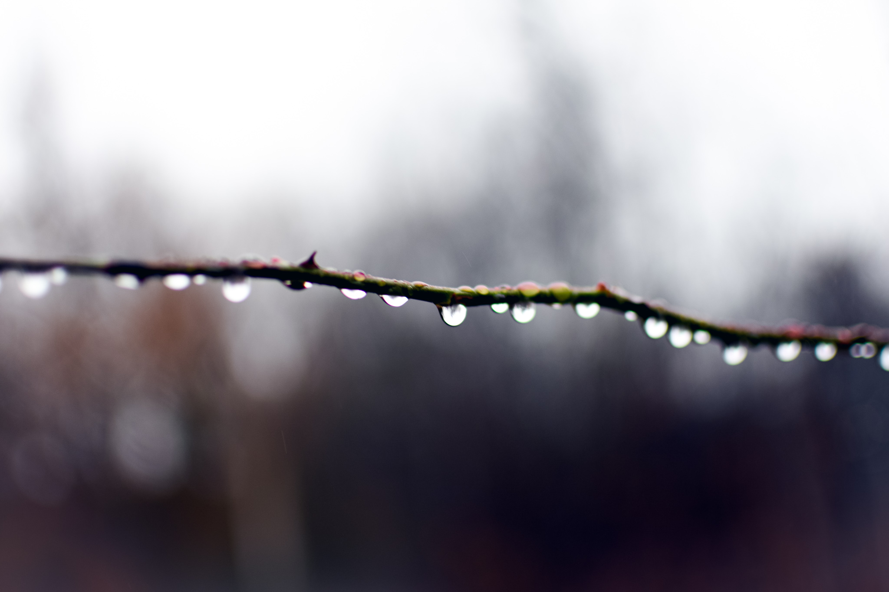

Taken and focused on aperture, edited in Lightroom, outdoor photoshoot and the light was hard to work with, also had
to make sure I captured the hair as the wind was blowing so I adjusted my shutter speed.
Title: MAL
Taken and focused on aperture, edited in Lightroom and Photoshop. Outdoors shot on a mirror to cature the contrast.
Focused on enhancing colors
Title: LIGHTS
Played with dark room for the first time and used lights to focus and learn aperture. First photo assignment ever!
Title: WALK
Outdoor woods shoot with Ben, main focus was on capturing the colors accurately and editing them in Adobe Lightroom
Title: IZZY
Asked my roommate to help pose with string lights, focusing on drastically changing the lighting from a pitch black room to a soft blue and pink palette.
Title: WOODS
Tried making my own pre-sets in Adobe Lightroom and editing out some oddities in Photoshop!
Focused on enhancing colors
Title: STREAM
This was actually taken in a small stream right in front of a city, which I cropped out in Photoshop and used colors to really brighten it up so it looks
like more of a beautiful stream.
Title: PUDDLE
This was actually taken in a dirty puddle which I enhanced and cleaned up with my own blue pre-set in Lightroom
Title: BRANCH
Used a very low f-stop to really focus and blur the background to capture the droplets on this thin branch, 1.8

Title: PLANTS
Used another low f-stop and higher shutter speed as it was blowing in the wind and then edited in Lightroom and Photoshop to take out the city background it was against.
Title: SWAMP
Taken amongst a mess of branches and dull swamp, I pulled up the contrast and darkened the colors individually to give it a fairytale swamp feeling!
Title: DROPLETS
For this I enhanced the droplets after focusing with a low aperture and put my own red preset on it to bring some color into the picture.
Title: BEN
Taken in a forest, Ben blended into the trees so I had to make the contrast stark and pull him into the foreground so he wasn't lost, edited in Lightroom.
Title: P.D 2
This was a series that I took of my roommate, she was dancing around so I had to set the appropriate shutter speed to capture her movement in a still shot.
Title: BERRIES
Really tried to bring out the red but have a blue overlay so the tones could play against each other beautifully.